Spring 05
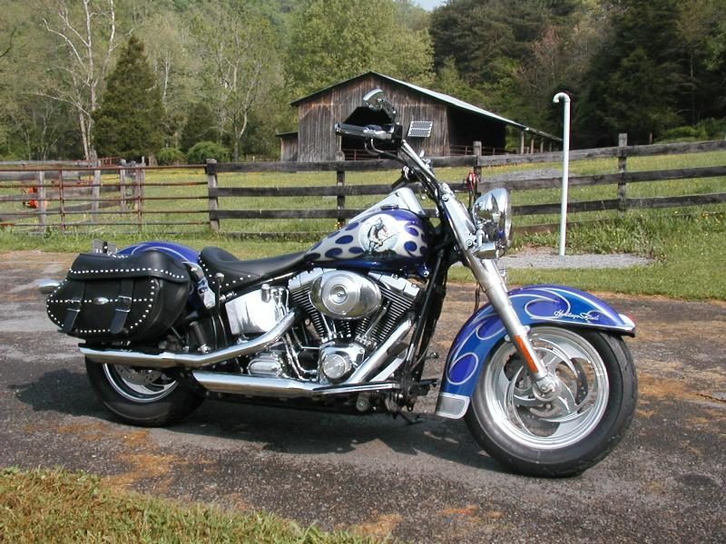
Rode down to Andy’s last
weekend. Eight hours in the saddle down
the spine of the
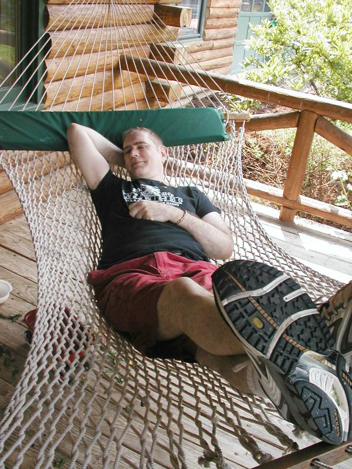
As you can tell, I don’t enjoy
these trips particularly.
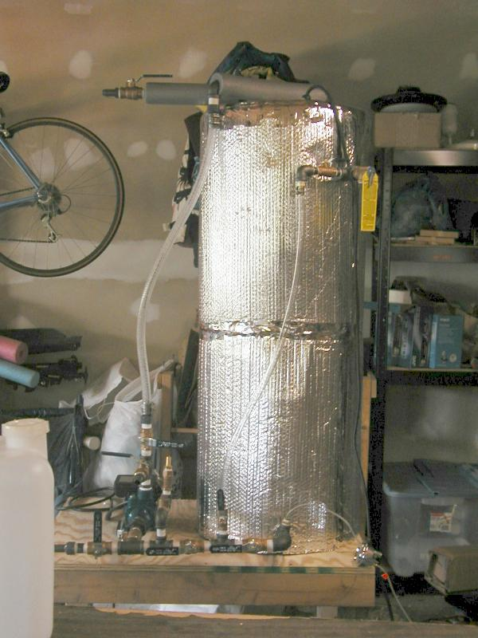
Andy built this biodiesel
cracker from a third-generation open-source design. You can pump in vegetable
or animal fat, heat to 120, cook with a home-made methyl sodium compound. The
glycerol cracks off and sinks to the bottom, where it can be drained off. With the remaining oil is
carbon chains with low viscosity. The methanol can be condensed and recycled.
Yes, it would do nicely as a meth lab. Andy is careful not to buy lye and methanol (liquid
Heat) on the same trip as Sudafed. WalMart registers
are programmed to flag such sales.
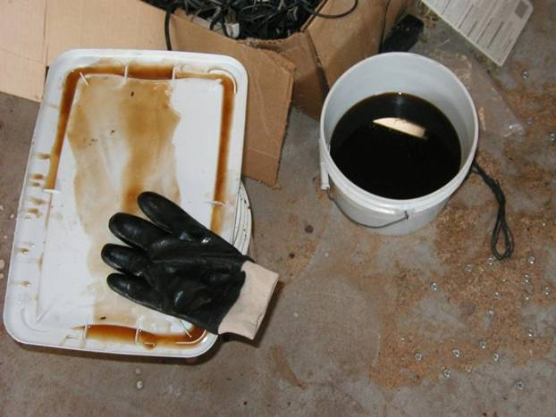
Here’s the last DEA agent to come
snooping around. We got 36mpg.
Damn revenooers.
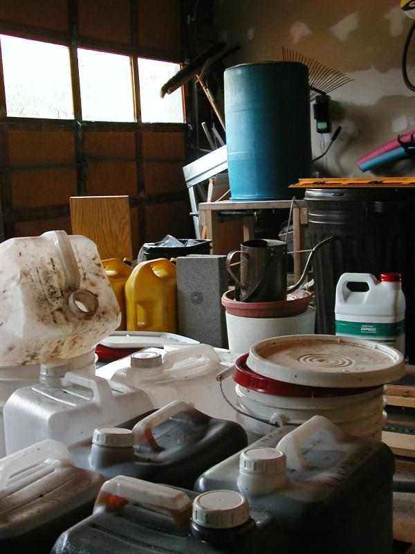
This unit washes the biodiesel with water to remove particulates and solubles.
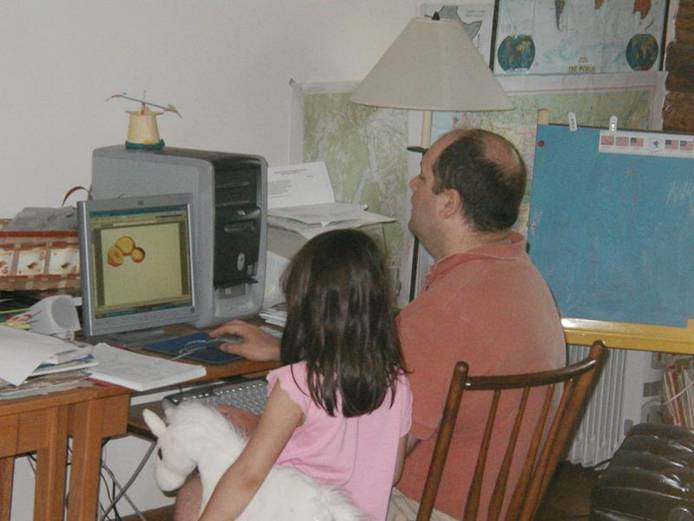
Amaya did a science fair project about
the electrochemistry of fruit. Andy is helping her pick out clip art.
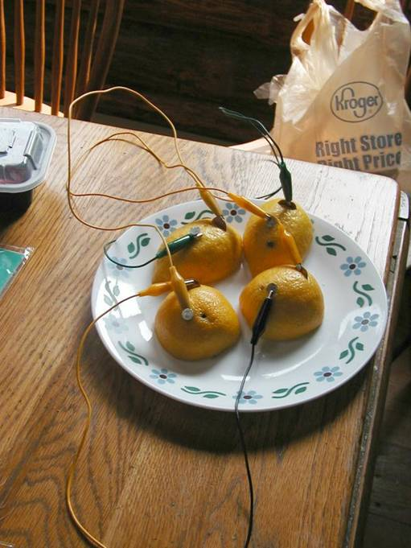
Frankenfruit
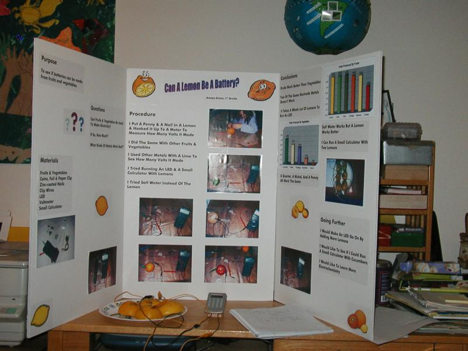
Amaya’s presentation.
This was written by a first grader.
Andy didn’t help with any of the text.
The judges ended up creating a new
over-the-top award category for her.
Amaya can also give the scientific names
of local plants, and explain why elements at the right of the periodic table
don’t interact (Full K or L shell).
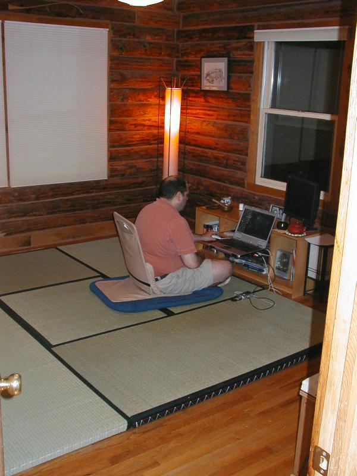
Andy has set up his home office as
a Shinto shrine. The bookcase holds the requisite number of (computer) books on
the proper side. Andy doesn’t use them
because he looks stuff up online, but you can’t beat the feng
shue.
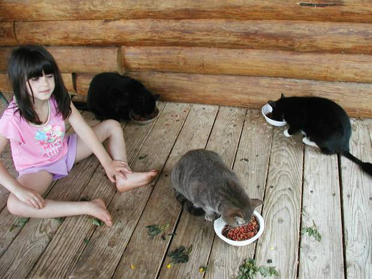
From left: Amaya,
Cleo, George Sand, Dusty.
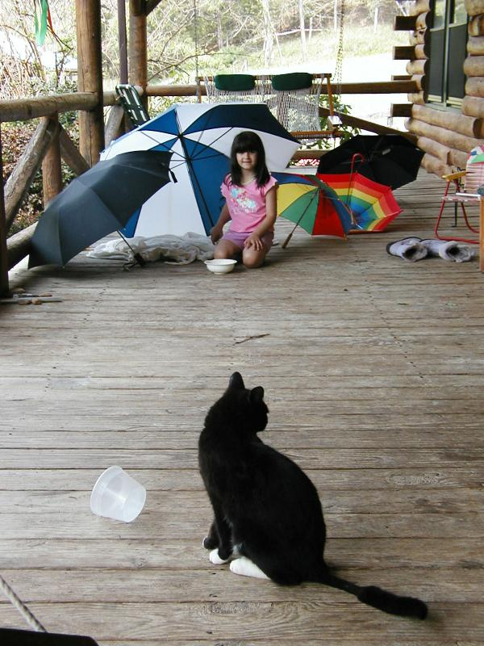
Amaya’s umbrella fort
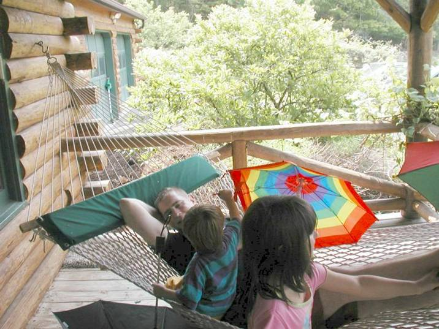
Alex blesses me with handfuls of lemon
balm.